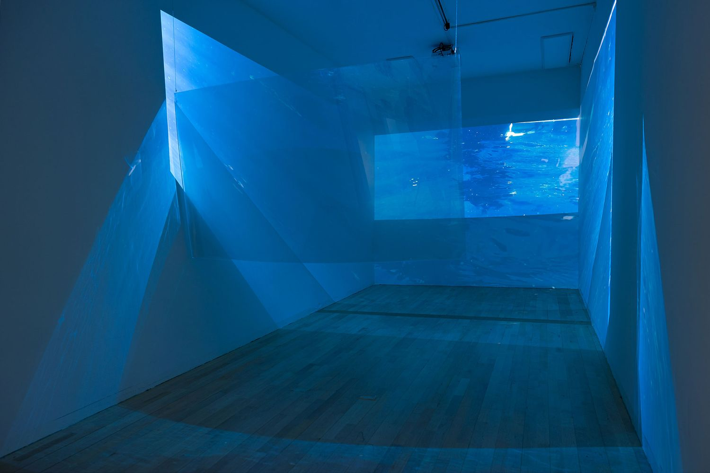
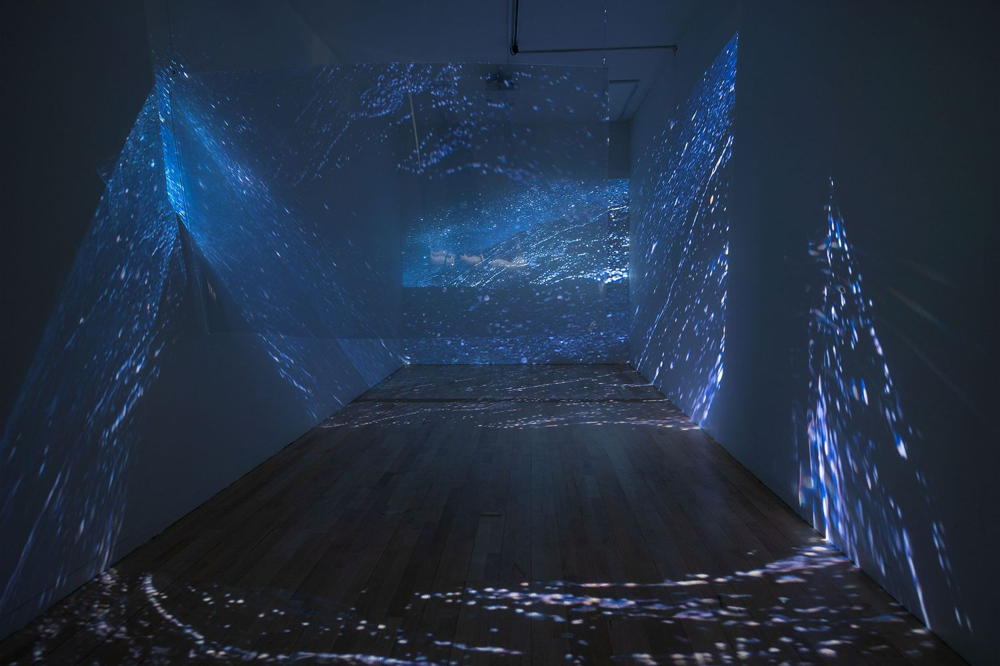
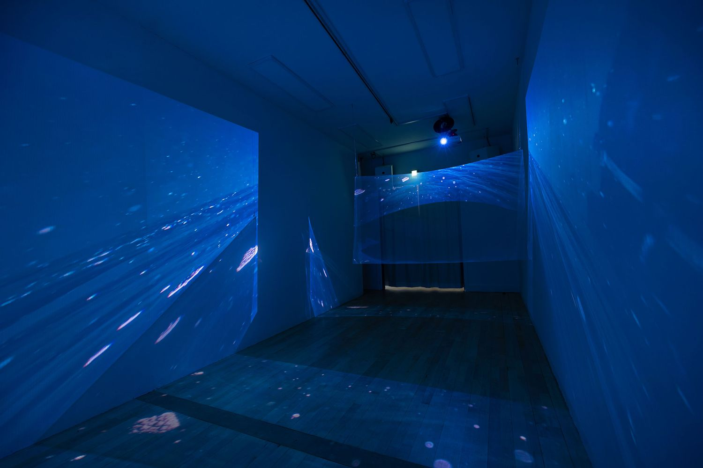

WORKS · EXHIBITION
두 비트 사이의 틈Between Two Beats

2022년 금천예술공장에서 열린 기획전 《두 비트 사이의 틈》에 참여했다. 전시 마지막 날에는 사운드 퍼포먼스를 선보였다.
A group exhibition at Geumcheon Art Factory in 2022. On the closing day Kwon presented a sound performance.
크레딧Credits
- 기간Dates2022년 7월 21일 – 8월 10일 · 8월 1일 휴관21 July – 10 August 2022 · closed 1 August
- 장소Venue금천예술공장 3층 P333 (서울 금천구 범안로15길 57)P333, 3F, Geumcheon Art Factory, Seoul
- 참여작가Artists권희수, 노세환, 박윤주, 서재정, 안광휘, 윤주희, 이재욱, 이현우, 조재영, 진달래 & 박우혁HeeSue Kwon, Noh Sehwan, Park Yunjoo, Seo Jaejeong, Ahn Kwanghwi, Yoon Joohee, Lee Jaewook, Lee Hyunwoo, Cho Jaeyoung, Jin Dallae & Park Woohyuk
- 기획Curated by고윤정 · 어시스턴트 기획 임현영Ko Yunjung · assistant curator Lim Hyunyoung
- 도록 글Catalogue text김민관 (아트신)Kim Mingwan (Art in News)
- 디자인Design파이카Paika
- 작품협력 및 설치Production장성욱, 스튜디오에어, 홍앤장예술사무소Jang Seonguk, Studio Air, Hong & Jang Art Office
- 사진Photography스튜디오마실Studio Masil
- 후원Supported by한국문화예술위원회 시각예술창작산실 우수전시Arts Council Korea, Visual Arts Production Support
상영 · 전시Screenings & exhibitions
- 사운드 퍼포먼스Sound performance — 2022년 8월 10일 오후 6시 · 권희수10 August 2022, 6pm · HeeSue Kwon
- 도슨트 투어Curator tours — 2022년 7월 26일, 8월 8일 오후 1시 · 금천예술공장–예술의 시간26 July and 8 August 2022, 1pm · Geumcheon Art Factory – Time of Art
- 아티스트 토크 & 지금 ‘로컬’Artist talk — 2022년 8월 6일 오후 3–5시6 August 2022, 3–5pm


